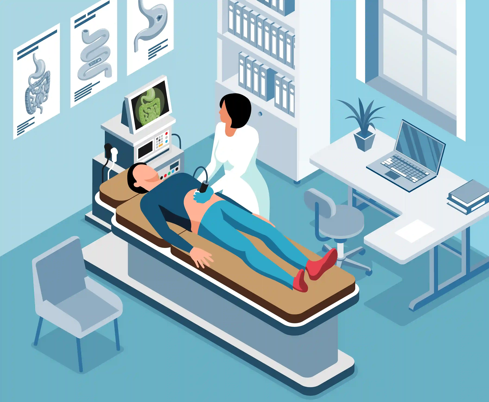
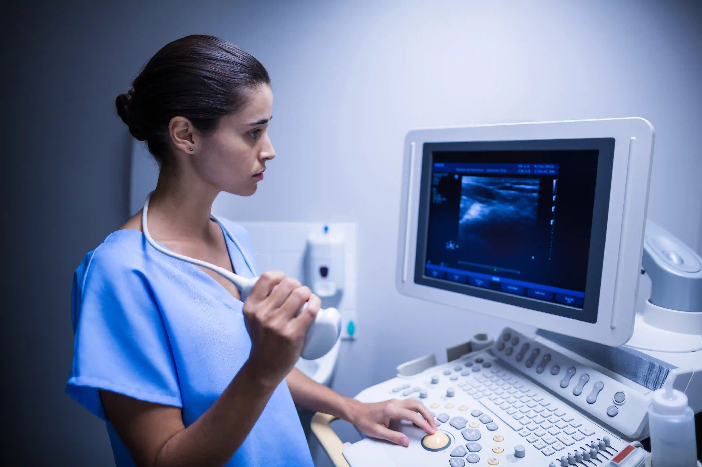

Published: 12 May 2026 | Reviewed by: Gani Hospitals Radiology & Internal Medicine Team
Being advised to undergo an abdominal scan Ramanathapuram may feel worrying, especially when the reason is not fully explained. Most patients visiting our scan center Ramanathapuram have similar concerns and questions. This guide helps you understand everything clearly. An abdominal ultrasound is a safe, painless, and radiation-free test used to examine internal organs in real time. At Gani Hospitals Radiology, our team provides accurate diagnostic imaging Ramnad to help doctors detect conditions early and plan the right treatment. Whether you searched for an ultrasound scan near me or were referred by your doctor, this guide explains what the scan is, why it is needed, and how to prepare for your visit.

An abdominal scan Ramanathapuram at our radiology department uses high-frequency ultrasound to examine the liver, gallbladder, pancreas, spleen, kidneys, bladder, and major blood vessels for abnormalities including stones, cysts, tumours, inflammation, and structural changes. It is the most commonly recommended first-line imaging investigation for abdominal pain, bloating, jaundice, urinary symptoms, and digestive problems. Our scan center Ramanathapuram delivers same-day reports reviewed by a qualified radiologist, with no radiation exposure and no recovery time required after the procedure.
An abdominal ultrasound uses high-frequency sound waves — not X-rays or radiation — to produce real-time images of the organs inside your abdomen. A small handheld device called a transducer is moved gently over the surface of your skin after applying a water-based gel. The sound waves bounce off internal structures and return as echoes that a computer converts into detailed grayscale images on a screen.
When patients search for an ultrasound scan near me, an abdominal scan is among the most frequently performed studies at any diagnostic imaging Ramnad facility. It is fast, painless, safe for all age groups including children and pregnant women, and provides immediate diagnostic information. At our radiology department department, every abdominal scan Ramanathapuram is performed by a qualified sonographer and formally reported by an MD radiologist — ensuring the accuracy and clinical reliability your treating doctor depends upon.
A full abdominal scan typically evaluates eight major organ systems in a single session, making it one of the most information-rich investigations available for the cost and time involved. Our scan center Ramanathapuram is equipped with high-resolution ultrasound machines that capture fine structural detail, Doppler flow assessment, and measurements your physician uses directly in clinical decision-making.
Size, texture, echogenicity, fatty change, cysts, lesions, and hepatic vessel flow.
Gallstones, polyps, wall thickening, bile duct dilatation, and cholecystitis.
Size, echogenicity, ductal dilatation, cysts, and signs of pancreatitis.
Size, texture, splenomegaly, infarcts, cysts, and accessory spleens.
Stones, cysts, hydronephrosis, cortical thinning, and renal masses.
Wall thickness, stones, tumours, residual urine volume, and diverticula.
Abdominal aortic aneurysm screening, vessel calibre, and Doppler flow patterns.
In women — uterine fibroids, ovarian cysts, pelvic fluid, and endometrial thickness.
Doctors refer patients to a diagnostic imaging Ramnad facility for abdominal scans for a wide range of clinical reasons. Here are the most common situations that lead to a referral to our scan center Ramanathapuram:
Pain in the upper right abdomen often points to gallstones or liver pathology. Left-side pain may indicate the spleen, kidney, or colon. Central pain around the navel can suggest the pancreas, aorta, or mesenteric nodes. An abdominal ultrasound Ramnad study identifies the source quickly and non-invasively.
Yellow discolouration of the skin or eyes is caused by elevated bilirubin. An abdominal scan examines the liver, bile ducts, and gallbladder to determine whether the jaundice is due to gallstones blocking the bile duct, hepatitis, cirrhosis, or a pancreatic mass compressing the common bile duct.
If your blood tests show elevated SGOT, SGPT, or bilirubin, your doctor will request a liver scan Ramanathapuram to visualise the liver directly. Fatty liver, hepatitis, cirrhosis, and liver lesions are all identifiable on ultrasound even when symptoms are absent.
Urinary symptoms including burning, frequency, difficulty voiding, or blood in the urine often prompt a kidney ultrasound Ramnad study. Kidney stones, bladder stones, urinary tract infections with hydronephrosis, and bladder tumours are all detectable through the scan.
Persistent abdominal bloating, fullness after meals, and chronic indigestion that does not respond to standard treatment may signal gallbladder disease, fatty liver, pancreatic pathology, or free fluid in the abdomen — all assessed through an abdominal scan Ramanathapuram at our our radiology department department.
Rising creatinine and urea levels in blood tests alert doctors to declining kidney function. A kidney ultrasound Ramnad assesses kidney size, cortical thickness, obstruction to urine flow, and cystic changes that explain the functional decline and guide treatment decisions.
Women with lower abdominal pain, irregular periods, or suspected ovarian cysts are referred for a pelvic and abdominal ultrasound. At our sonography center near me in Ramanathapuram, our radiologists evaluate the uterus, ovaries, and fallopian tube regions for fibroids, cysts, endometriosis indicators, and ectopic pregnancy.
Diabetic patients commonly develop fatty liver, kidney disease, and gallbladder abnormalities as long-term complications. Annual abdominal ultrasound Ramnad studies are recommended for diabetic patients to monitor these complications before they cause symptoms or functional impairment.
When a doctor palpates an abdominal mass during physical examination, or a patient reports feeling a lump, an abdominal scan Ramanathapuram is the first-line investigation. It differentiates between solid and fluid-filled structures, benign and suspicious lesions, and guides whether further imaging such as CT or MRI is required.
Uncontrolled or secondary hypertension can originate from the kidneys — a condition called renovascular hypertension. Our our radiology department team performs renal Doppler studies as part of the hypertension workup, assessing blood flow to both kidneys and identifying renal artery stenosis that may be driving the elevated blood pressure.
Our our radiology department department offers a full range of abdominal imaging modalities at our scan center Ramanathapuram. Your doctor will specify which type is appropriate based on your clinical presentation:
The most common study — evaluates all major abdominal organs in a single session. The first-line investigation for most abdominal complaints referred to our diagnostic imaging Ramnad centre. Safe, painless, no radiation.
Specifically examines the uterus, ovaries, and pelvic structures in women, and the prostate and bladder in men. Often performed as a combined abdominal and pelvic study at our sonography center near me.
Adds blood flow assessment to standard imaging using colour and spectral Doppler technology. Essential for evaluating renal artery stenosis, portal hypertension, hepatic vein thrombosis, and vascular masses. Available at our our radiology department department.
Focused study of both kidneys, ureters, and the urinary bladder. The standard investigation for kidney ultrasound Ramnad referrals covering stone disease, hydronephrosis, renal masses, and bladder pathology.
Detailed study of the liver, gallbladder, and bile ducts. Used when a liver scan Ramanathapuram referral is made specifically for jaundice evaluation, abnormal LFTs, suspected fatty liver, cirrhosis staging, or hepatic mass characterisation.
Uses higher frequency transducers for more detailed evaluation of superficial abdominal structures including the appendix, bowel wall, mesenteric lymph nodes, and hernia sacs. Requested when standard abdominal ultrasound Ramnad requires supplementary detail.

The following are the most frequently identified findings at our scan center Ramanathapuram during abdominal ultrasound studies. Early detection through routine or symptomatic diagnostic imaging Ramnad allows for timely treatment and prevents serious complications.
| Organ | Condition Detected | Significance |
|---|---|---|
| Liver | Fatty liver (Grade I, II, III), hepatitis, cirrhosis, liver cysts, hepatic haemangioma, focal lesions | Early cirrhosis and fatty liver are reversible with intervention. Focal lesions require follow-up imaging or biopsy. |
| Gallbladder | Gallstones, biliary sludge, gallbladder polyps, cholecystitis, contracted gallbladder, bile duct stones | Untreated gallstones can cause acute cholecystitis, pancreatitis, and bile duct obstruction requiring emergency surgery. |
| Pancreas | Pancreatitis (acute and chronic), pancreatic cysts, duct dilatation, focal pancreatic masses | Pancreatic masses have a high malignancy risk. Early detection significantly improves surgical outcomes. |
| Spleen | Splenomegaly (enlarged spleen), splenic cysts, splenic infarcts, accessory spleen | Splenomegaly indicates systemic illness including liver disease, haematological conditions, or infection. |
| Kidneys | Renal stones, hydronephrosis, renal cysts, cortical thinning, renal masses, polycystic kidney disease | Obstruction and stones cause progressive kidney damage if untreated. Early kidney ultrasound Ramnad enables timely urology referral. |
| Bladder | Bladder stones, bladder wall thickening, bladder tumours, post-void residual volume, diverticula | Bladder tumours detected early have a much better prognosis than those found at symptomatic stages. |
| Aorta | Abdominal aortic aneurysm (AAA), atherosclerotic plaques, aortic dilatation | AAA can rupture fatally if undetected. Ultrasound screening identifies candidates for surgical repair before rupture. |
| Uterus & Ovaries | Uterine fibroids, ovarian cysts, polycystic ovaries, endometrial thickening, pelvic free fluid | PCOS, fibroids, and endometrial changes affect fertility and long-term hormonal health — all identifiable through our radiology services Ramanathapuram. |
| Lymph Nodes | Mesenteric lymphadenopathy, retroperitoneal lymphadenopathy | Enlarged lymph nodes may indicate infection, inflammatory bowel disease, or lymphoma requiring further evaluation. |
| Free Fluid | Ascites, pelvic free fluid, loculated collections | Ascites indicates advanced liver disease, cardiac failure, malignancy, or peritoneal infection — each requiring distinct treatment pathways. |
Every abdominal scan Ramanathapuram at our centre is formally reported by a qualified MD radiologist — not just a technician-generated image.
Our our radiology department machines deliver sharp, detailed images across all frequencies — improving diagnostic accuracy for small lesions and subtle pathology.
Reports from our our imaging centre are issued the same day, shared digitally, and formatted for direct use in specialist referrals and treatment planning.
Advanced Doppler assessment for vascular evaluation is available at our diagnostic imaging Ramnad centre — essential for renal, hepatic, and portal vein studies.
Findings from your abdominal ultrasound Ramnad study feed directly into specialist consultations, inpatient care, and surgery planning within the same hospital.
Centrally located in Ramanathapuram, our sonography center near me is easily reachable from Rameswaram, Paramakudi, Mandapam, Keelakarai and all surrounding areas.
All scans at our radiology services Ramanathapuram centre are conducted in private, enclosed examination rooms with same-gender sonographer available on request.
Clear, upfront scan fees with no hidden charges. Insurance and government health scheme patients are supported at our our radiology department counter.
Both walk-in and pre-booked scan appointments accepted at our our imaging centre. Urgent scans for inpatients and emergency referrals prioritised.
Many patients feel anxious simply because they do not know what to expect. Here is exactly what happens during an abdominal ultrasound in Ramanathapuram at our our radiology department centre:
Submit your referral at reception. Our team confirms the scan type and collects your details.
You lie on a padded examination couch. Clothing is moved to expose the abdomen. No gown change required in most cases.
A clear, water-based gel is applied to your skin. The gel is warm and washes off easily after the scan.
The sonographer moves the transducer over your abdomen, capturing images of each organ systematically. Takes 15 to 30 minutes.
Images reviewed by our MD radiologist. A written report is issued the same day and shared digitally with the patient and referring doctor.
The entire visit to our our imaging centre — from registration to receiving your report — typically takes 45 minutes to one hour for a standard full abdominal study. No recovery time is needed and you may eat and resume normal activities immediately after your diagnostic imaging Ramnad appointment.
A formal radiology report from our radiology department follows a structured format. Understanding the terminology helps you engage more meaningfully with your treating doctor when they explain the findings:
While most abdominal ultrasound Ramnad studies are performed following a doctor's referral, there are circumstances where adults are encouraged to proactively request an abdominal scan at our sonography center near me as part of preventive health screening:
Self-referred scans at our radiology services Ramanathapuram centre are accepted. Our duty radiologist can advise on follow-up or specialist referral if significant findings are identified during a self-referred radiology imaging in Ramnad study.
For reliable, evidence-based information on abdominal ultrasound, radiology, and diagnostic imaging, refer to these globally trusted health authorities:
These resources complement the expert clinical guidance provided by our MD radiologists at our radiology department — the most trusted our imaging centre for radiology imaging in Ramnad across the entire district.
An abdominal scan is not something to fear — it is one of the most valuable tools modern medicine has for looking inside the body quickly, safely, and accurately. When your doctor recommends an abdominal ultrasound in Ramanathapuram, they are requesting information that will directly guide your diagnosis and treatment. Choosing the right facility matters enormously. A high-resolution machine operated by an experienced sonographer and reported by a qualified radiologist makes the difference between a definitive diagnosis and an inconclusive study that delays your care.
At our radiology department department — the most advanced our imaging centre in the Ramnad district — every radiology imaging in Ramnad study is performed with clinical precision, reported by an MD radiologist the same day, and integrated into the full spectrum of specialist medical care available under one roof. Whether you are a walk-in patient searching for an ultrasound scan near me or a referred patient from your family physician, our radiology services Ramanathapuram team is ready to provide the clarity your doctor needs and the answers you deserve.
Also explore: Pregnancy Scan and Maternity Services at Gani Hospitals | Full Body Health Checkup Packages | Home Blood Test Collection Service | Book a Scan Appointment at Gani Hospitals
Same-day reports. MD radiologist review. Advanced imaging technology.
our radiology department — the most trusted
our imaging centre for radiology imaging in Ramnad.
The most trusted ultrasound scan near me in Ramanathapuram is at our radiology department department. Our our imaging centre offers comprehensive abdominal ultrasound in Ramanathapuram studies including full abdominal, pelvic, KUB, Doppler, and liver-specific scans with same-day MD radiologist reports.
Doctors request an abdominal ultrasound Ramnad study for many reasons including abdominal pain, jaundice, abnormal blood tests, urinary symptoms, suspected gallstones or kidney stones, fatty liver monitoring, pelvic pain in women, and hypertension workup. It is the safest first-line radiology imaging in Ramnad investigation for most abdominal complaints.
Yes. Abdominal ultrasound uses sound waves, not radiation, and is completely safe for all patients including children, pregnant women, and elderly individuals. Every abdominal ultrasound in Ramanathapuram at our our radiology department centre is performed following international safety protocols with no known side effects.
Yes, for a full abdominal scan a 6 to 8-hour fast is required before your visit to our our imaging centre. This ensures the gallbladder is distended and bowel gas is minimised for the best image quality. For a pelvic or KUB scan, a full bladder is required instead of fasting. Our our radiology department team provides specific instructions when you book your appointment.
A standard full abdominal ultrasound in Ramanathapuram at our radiology services Ramanathapuram centre takes 15 to 30 minutes for the scanning itself. Including registration and report issuance, most patients complete their entire visit within one hour. Reports are shared digitally the same day.
Yes. Self-referred patients are accepted at our sonography center near me in Ramanathapuram. Our duty radiologist at our radiology department can assess your scan findings and advise on whether specialist follow-up is required. Walk-in and pre-booked appointments are both available at our our imaging centre.